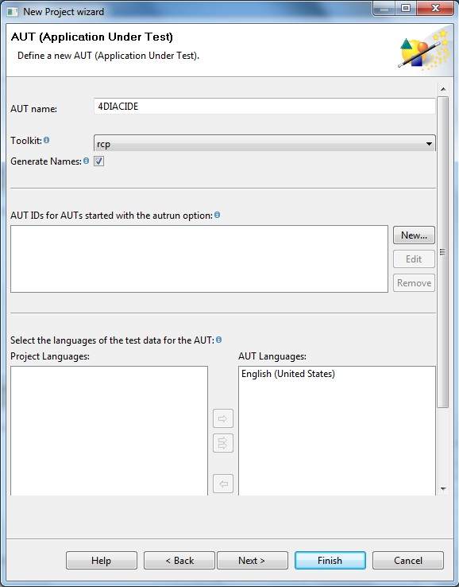
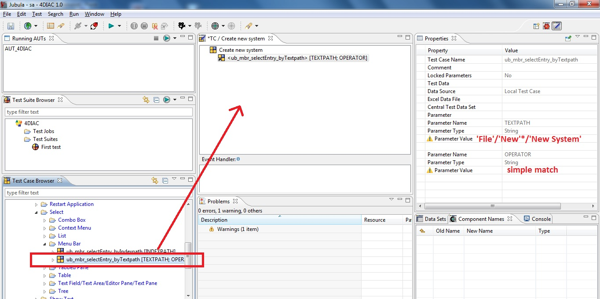
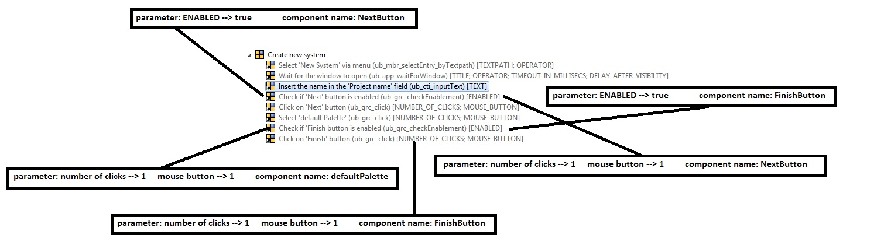
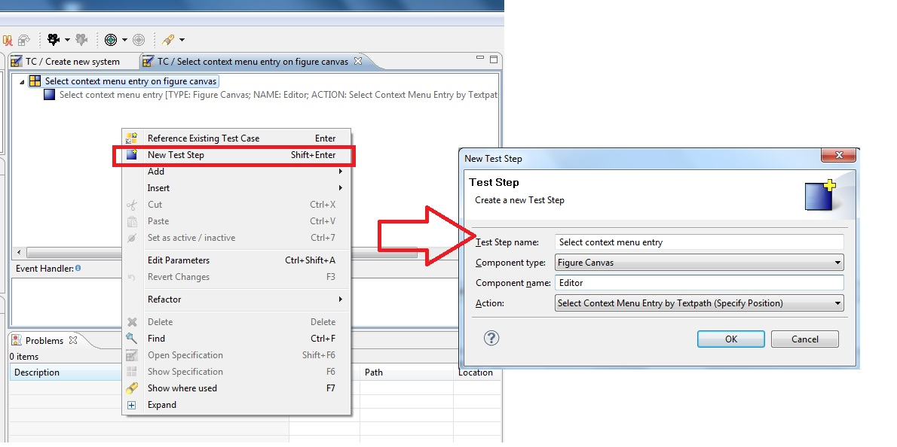
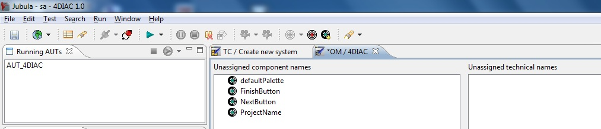
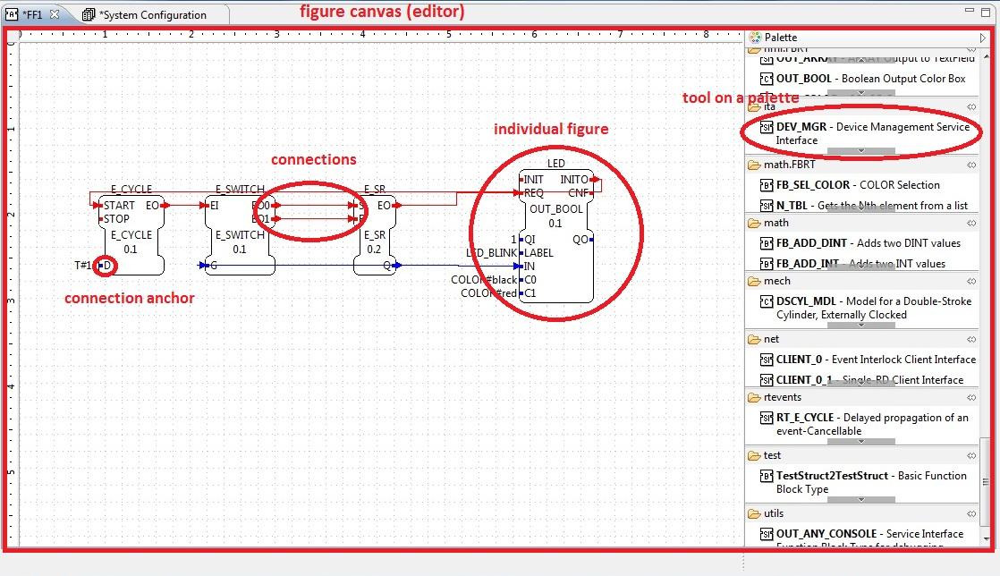
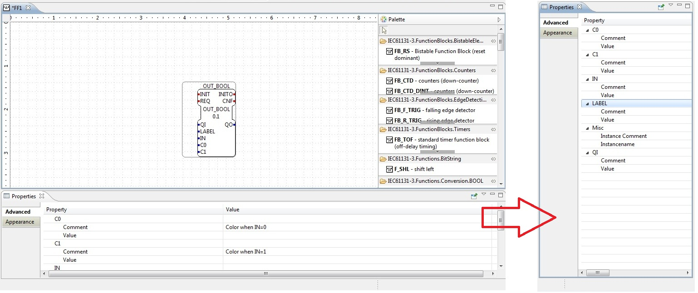
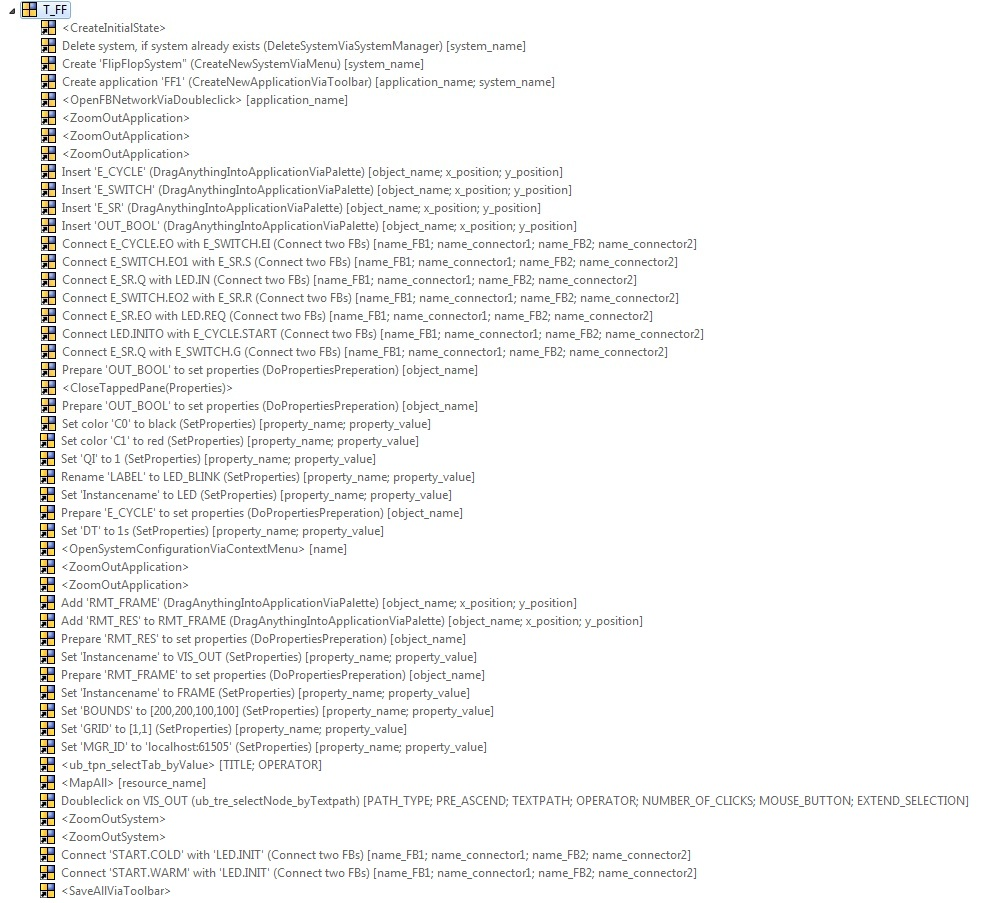
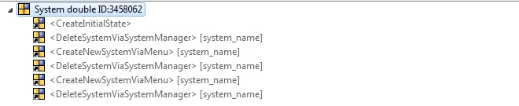

Automatic testing with Jubula
Jubula is a kind of tool which is used for automated functional GUI testing. Jubula supports Java and HTML applications, so it's possible to test the 4DIAC-IDE with this software tool. The tests are written from the user perspective and they are keywords-driven. Besides the test case generation is based on dragging and dropping actions from a library, so special programming skills are not necessary. In the following sections the basic principles of "Testing with Jubula" are shown. The term AUT stands for Application Under Test and is the GUI you want to test.
Installation
Choose the Jubula Standalone product on the Jubula Download Page and select your operating system. Under Windows:
- Browse to the download directory and launch setup.exe
- Accept the license agreement
- Choose the installation directory
- Select and install all components (Jubula Documentation is also recommended)
Preparation of IDE
Before we can get started working with Jubula, some preparative tasks are necessary. You need an installed 4DIAC-IDE. It's not possible to test the 4DIAC-IDE when you are running the IDE in development mode (from source). That means you have to build a binary package. For installation instructions see Building a binary 4DIAC-IDE package from source. Then:
- Add plugin:
- Browse to the Jubula installation directory
- Extract the jar files of the rcp-support archive, located in the development folder into the plugin directory inside the installation directory of the 4DIAC-IDE.

- Activate plugin
- Open the configuration/config.ini file in the product directory
- Write ,org.eclipse.jubula.rc.rcp@start at the end of the line from osgi.bundles to activate the plugin
- Save config.ini

Working with Jubula
New Project
- Start Jubula and create a new project via the menu Test/New
- Enter a project name, select rcp as toolkit and choose the preferred language
- Click next

- Enter an AUT-name (Application Under Test)
- Select rcp as toolkit again
- After the selection a dialog about the "Remote Control Plugin" appears. Click on proceed. We have added this plugin in the previous actions.
- Click on Finish to set the AUT-configuration later. (If you click on Next, you can edit the configuration right now. The required settings are described in the next section.)

AUT-configuration
- Edit properties via the menu Test/Properties
- In the category AUTs choose the previously defined AUT and click on Edit.
- We want to edit the AUT_configurations, so click again on Edit.
- Enter a name for the AUT_ID. At "Executable File Name" browse to the path were the ".exe"-file of your application is located and select this file.
- Click OK

- Before you can start your AUT out of Jubula you have to start the AUT-Agent. Therefore execute Jubula/Start AUT Agent in the Windows start menu. Besides you need administrator rights to execute the AUT-Agent under Windows.
- Switch back to Jubula and click on the toolbar items (1. Connect to AUT Agent, 2. Start AUT) shown on the following picture.

- Now the AUT, in our case the 4DIAC-IDE, should get started.
Test case creation
After the configuration we want to start creating a test case. The following picture shows an overview of Jubula.
- Test Case Browser: Here you can create new test cases and add categories to strucure your tests. Besides there are the basic test actions which you can use to create your test cases.
- Test Suite Browser: You can create test suites and test jobs. Test suites contain test cases and they have to be bound to one AUT. It is possible to test different AUTs or different instances of the same AUT, using test jobs.

Test case example
As an example the creation of the "Create a new system in the 4DIAC-IDE" test case is shown.
- Create a new test case via Test Case Browser --> Click right on Test Case --> New --> New Test Case
- Doubleclick on the created test case to open it.
- What actions do we need to create a new system in our 4DIAC-IDE?
- At first we need to open the New Control System dialog via the menu in the 4DIAC-IDE --> To do this we have to find a suitable action in the test case browser of Jubula in the unbound_models_concrete category. Drag the test case marked in the following picture and drop it to our test case and set the parameter values in the Properties view.

- Then we want to wait for the dialog (window) to open. Search for up_app_waitForWindow (you can find it under unbound_models_concrete-->actions-->wait-->application-->wait for window) and add it to our test case. Set the paramater values:
- title --> New Control System
- operator --> equals
- timeout in millisecs --> 15000
- delay after visibility--> 200
- Now we want to insert a project name into the text field: Look for unbound_models_concrete-->actions-->input via keyboard-->component with text input-->ub_cti_inputText in the test case browser. Set the paramater value: Text --> FirstSystem
- Besides it is recommended to give the component (in this case the input text field) a new name as shown in the following picture. If you can't see the this window on your screen, select Window-->Show View-->Component Names

- Add the the following actions and set the parameter values and component names to finish the test case creation

- At the end we have to create a Test Suite. Click right in the Test Suite Browser and select New-->Test Suite. Then open the suite and add the test case (Create new system) via drag and drop to the test suite.
Methods of creating test cases
- Drag and drop test cases out of the Test Case Browser, used in the previous example
- Observation Mode: It is possible to record completed actions in the AUT. Click on the Start Observation Mode toolbar item. A window, where you can see the recorded actions, appears. Switch to the AUT and perform your desired actions and then click on the Stop Observing Test Case item. Some special types of actions can't be recorded.
- Insertation of new test steps: Sometimes it's useful to make new test steps. Click right in your open test case and select New Test Step as shown in the following picture. Then a window appears where you can choose the desired component type, component name and action.

Object mapping
In the section before, we have defined some new component names, but at the moment there is no relation to the real object (Jubula calls them technical names) in the AUT, because this is a kind of black box test. So we have to map the component names to the technical names. Therefore we have to the following steps:
- The AUT must be running, otherwise you can't start the Object Mapping Mode.
- Click on the toolbar item Start Object Mapping Mode.
- Now you should see the the unmapped component names.

- Switch to the AUT. When you move your mouse over the 4DIAC-IDE sometimes a green border appears. This means that Jubula recognises an object/component.
- Press CTRL+SHIFT+Q, if you want to detect this object. In our example project we have to do this four times. Switch back to Jubula

- You have to drag the components and drop it to the corresponding technical names. Now we are ready to start our test.

- Click on Start Test Execution in the Test Suite Browser. After the click you have to ensure that the AUT is the active window and in the foreground.
Import/Export projects
You can easily import existing projects. Select the desired project (.xml-document) via Test-->Import. Now you have to adapt the AUT-configuration to your system. Please refer to the "AUT-configuration" chapter. Export your project via Test-->Export. After entering a name a .xml-file is created.
Useful hints
In this chapter some key elements of Jubula, useful hints and also occured problems are described.
Structuring your test / keyword design
A Test Step is the smallest unit and represents one action on one component. A Test Case is the next level in the hierarchy and can contain test steps and other test cases. Then follow Test Suites, Test Jobs and finally the Project is on top of the hierarchy. It is recommended to create a keyword for every repeated action . A keyword is a test case which executes actions. You can reuse keywords and a possible change is only on one place necessary. Keywords can contain parameters. An example could be the Insertation of a Function Block via Type Navigator shown in the following picture. The parameters are the full path name of the FB and the relative coordinates of the editor, where the FB should be dropped. The keyword consists of two actions. The adressed components (tree and graphical component) are fixed.

It's also possible to make the components variable. Then the test case is called Utility module. An example is given in the picture below. You just have to check the box in the Component Name browser.

Initial state
It's well worth creating an inital state. The IDE saves the last perspective and so you never know the exact state (which windows, tapped panes are open...). I created the following test case to start each use case.

Event Handlers
With Event Handlers it is possible to react to errors during test execution. So you can guide your automated test, if an error occours. An Event Handler is a test case with (user-)defined actions. There are basically four types of errors:
- Check failed
- Action error
- Component not found
- Configuration error
For each error you can define the reentry type, return, retry, exit, continue, break, pause. Global Event Handlers should be added to each use case. With local Event Handlers you can handle "expected" errors, without activating the global Event Handlers.
Selecting and connecting components (FBs)
The 4DIAC-IDE is a RCP application and the GEF (Graphical Editing Framework) toolkit can be used to test graphical components. The editor is called figure canvas. There the following items can be displayed (also shown in the graphic below):
- Individual figures
- Tools on a palette
- Connections
- Connection anchors

All these items can be adressed with Jubula. To get the names of the items, the GEF inspector is used. Activate the GEF inspector via Window-->Show view-->Inspector. In the following picture you can see the inspector and the name of a connection anchor. Click on the marked icon to start the inspection. Then switch to the IDE and click on the desired item. It's not possible to get multiple names during one execution of the inspector.

If you have the names/adresses of your components you can do some special actions with them. You can find these actions in Jubula Test Case Browser --> unbound modules rcp

Annotation: I tried to use the click_connection action but it didn't work, so i used the drag_drop action to connect to graphical components.
Combining actions for different types (e.g. drag and drop)
It is possible to drag a FB out of the Type Navigator (tree) into the editor (can be seen as graphical component in this case). So use the drag action for the tree type (source) and the drop for the destination, as shown in the following picture.

Editing properties of a FB
You can edit properties of a FB in the properties-view. Therefore the FB has to be active and then you set the properties. In Jubula you can select the desired cell in the table. The problem is, if you want to write a text in the cell and the cell is not “visible”(not shown in the window, because you don’t have scrolled down), like for example the “Label/Value”-cell it is not working. My first guess was to maximize the properties window, but then the 4DIAC-IDE doesn’t apply the text input. So I moved the properties window to the right side of the IDE to see more properties. It’s not that easy to resize and move windows in Jubula. To scroll to the desired cell would be the best solution. You can also adress the property-items in a FB directly (Click the desired property). Then you just have to enter text and you don't need to work with tables.

Jubula Help
Jubula provides a quite good help. It is strongly recommended to read the Jubula User Manual and the Jubula Reference Manual. Besides there are a few tutorials (cheat sheets) too.
Test definition
One goal of my work was to define a few test cases of the 4DIAC-IDE and to implement them with Jubula. Therefore I started to built up a repertoire of small, reusable keywords/modules. I decided to reproduce the main steps out of the Flip-Flop tutorial at first.
Flip-Flop tutorial
The Flip-Flop tutorial can be seen at the following link: Creating_an_application. At this point I don't give a detailed description of the procedure of creating a Flip-Flop, because it's already done on the side mentioned above. The reason why I picked this tutorial as my first use case is that you can clearly understand the necessary tasks in Jubula by comparing with the tutorial. Basically the first and the second chapter of the tutorial is reproduced.

Error reproduction
With Jubula it is possible to reproduce previously occured errors. I have chosen two bugs (Bug tracker), which are described in the following.
System twice ID:3458062
Error description: When deleting an existing system and after that a new system is created with the name of the previously deleted system it will be twice in the system management.
Reproduction: After the inital step it is checked, if the system already exists. If it exists, it's deleted, otherwise nothing happens. After the system is deleted, the check is executed again to be sure there is no second system with the same name. This happens in the DeleteViaSystemManager step. Then the new system is created and afterwards the check function is called again. This procedure is repeated again and so it's possible to detect if a system is twice or not.

Drag components from type navigator ID:3496966
Error description: It's not possible to insert FBs from the type navigator into the application.
Reproduction (main steps): A new system is created after it was checked that a system with the same name doesn't already exists. A new application is created. Open the application and the type navigator view. Insert a FB from the type navigator into the application. Check if FB exists in application.
Annotation: The global event handlers are not shown in the graphics.

Test execution
The defined use cases (test cases), mentioned above, have been executed on two different versions of the 4DIAC-IDE. The test results are:
- Version: 1.1.1, Build id: 2012-03-15
- Flip-Flop --> OK
- System twice --> failed
- Drag components from type navigator --> OK
- Version: 1.1.0, Build id: 2012-02-15 (changeset 604)
- Flip-Flop --> OK
- System twice --> OK
- Drag components from type navigator --> failed
Conclusion
First of all good knowledge of the IDE which should be tested is a basic thing. That means you should know about the capabilities of the IDE. What’s more structuring of your test is very important. As mentioned above you can create keywords and modules. Basically such small parts should be created for every action being repeated. Using naming conventions and describing actions and parameters is essential too. Once you have built up a set of keywords and modules creating different use cases is getting easier and faster. For each test case an initial step is recommended because the IDE saves the last perspective, but we want a well defined state to start the test. Especially things like moving or resizing windows and other objects is not that easy in Jubula. It can take a lot of time handling such problems. There are basically four types of errors. For each of them a global error handler which performs defined actions should be set. Local error handlers can be used for conditional branches. All in all Jubula is an appropriated kind of tool to reproduce errors, but of course a reproduction of all bugs is not possible.
Links